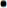
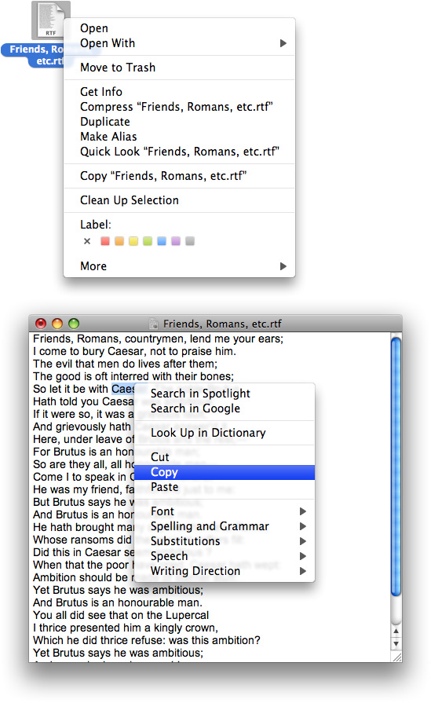

Menus
Menus present lists of items—commands, attributes, or states—from which the user can choose. Menus are based on the interface principle of see and point: People don’t have to remember commands or options because they can view all options at any time.
Menus are user interface elements that users refer to frequently, especially when they are seeking a function for which they know of no other interface. Ensuring that menus are correctly organized, are worded clearly, and behave correctly is crucial to the user’s ability to explore and access the functionality of your applications.
Menus appear in several different forms in the Mac OS X interface. This chapter describes pull-down menus in the menu bar, Dock menus, and contextual menus. These types of menus are illustrated in Figure 13-1.
Menus that are part of controls—for example, pop-up menus, command pop-down menus, and the menus in pop-up icon buttons and bevel buttons—are discussed in “Controls.” Note that some concepts from this chapter are applicable to those menu types as well.
In this section:
Menu Behavior
Designing the Elements of Menus
The Menu Bar and Its Menus
Contextual Menus
Dock Menus
Menu Behavior
When people use menus, they usually make a selection within their data and then choose a menu item. This behavior follows the see-and-point paradigm of identifying what needs to be acted on and then specifying the action by choosing a menu item. To choose an item in a menu, the user positions the pointer on the menu title and drags to the desired item. Each item is highlighted as it is selected. No action happens until the user releases the mouse button with the cursor over a menu item. (See “The Mouse and Other Pointing Devices” for more information on mouse usage and behavior.) People can move the pointer off a menu before releasing the mouse button without initiating any action. They can open and scan menus to find out what features are available without having to actually perform an action. When a menu item has been activated, it blinks briefly.
A user can also open a menu with a click. The menu stays open without the user having to continue holding down the mouse button. The user can then move the pointer to an item to select it or can move the pointer anywhere on the screen without losing sight of the menu. Once a menu is opened, it remains open until another action forces it to close. Such actions include:
Choosing a command from the menu
Moving the pointer to another menu title
A click outside the menu
A system-initiated alert
A system-initiated application switch or quit
Even if all of the items in a menu or submenu are unavailable, the menu or submenu title is not dimmed. The user can still open the menu, but all of its items are dimmed to indicate that these items are not available in the present context. Figure 13-13 shows a menu with unavailable menu items in the open and closed state.
As a general rule, avoid creating long menus. Long menus are difficult for the user to scan and can be overwhelming. If you find that there are too many items in a single menu, try regrouping them; you may find that some of the items fit more naturally in other menus.
If a menu contains more items than are visible onscreen, the menu can scroll to allow the user access to all of the menu items. A scrolling menu is shown in Figure 13-2.
A downward-pointing indicator at the bottom of the scrolling menu indicates that there are more items. When the user starts to scroll down, an upward-pointing indicator appears at the top of the menu to show that some items are no longer visible in that direction. When the user drags past the last visible item, the menu scrolls to show the additional items. When the last item is shown, the downward-pointing indicator disappears.
If the user drags back up to the top, the menu scrolls back down in the same manner. The next time the menu is opened, it appears in its original state (with the indicator at the bottom).
Do not design your application to intentionally include scrolling menus; they should exist only when a user adds many items to a customizable menu or when the menu’s function causes it to have items added to it (for example, the Finder’s Window menu).
Designing the Elements of Menus
Menu elements include words (and sometimes icons) to designate menu titles and menu items, and symbols to designate keyboard shortcuts, hierarchical menus, separators, and the state of some menu items. These elements are illustrated in Figure 13-3.
Titling Menus
Menu (and submenu) titles should appropriately represent the items in the menu. For example, a Font menu could contain names of font families, such as Helvetica and Geneva, but it shouldn’t include editing commands, such as Cut and Paste. Avoid using icons for menu titles. Make menu titles as short as possible without their losing clarity.
Naming Menu Items
Menu item names should be either actions performed on an object or attributes applied to an object:
Actions are verbs or verb phrases that declare the action that occurs when the user chooses the item. For example, Save means save my file and Copy means copy the selected data. Your action menu commands should begin in the same way, with an action verb in its base (simplest) form.
Attributes are adjectives or adjective phrases that describe the change the command implements. Adjectives in menus imply an action and should fit into the sentence “Change the selected object to …” —for example, Bold or Italic.
When a menu item is unavailable—because it doesn’t apply to the selected object or to the selected object in its current state, or because nothing is selected, for example—the item should appear dimmed (gray) in the menu and is not highlighted when the user moves the pointer over it.
Use title-style capitalization in your menus. See “Capitalization of Interface Element Labels and Text” for more information on this style.
An ellipsis character (…) after a menu item indicates to the user that additional information is required to complete a command. For information on when to use an ellipsis in menu items, see “Using the Ellipsis Character.”
It may be appropriate in some cases to provide dynamic menu items—commands that change when the user presses a modifier key. For example, if the user opens the Window menu in the Finder and then presses the Option key, some of the menu items change, as shown in Figure 13-4. The system appropriately sizes the menu to hold the widest item, including Option-enabled commands.
Dynamic menu items are an appropriate way to offer a shortcut to sophisticated users. However, because dynamic menu items are hidden by default, they should never be the only way to accomplish a task. Be sure that you don’t require users to discover a dynamic menu item before they can use your application effectively. To return to the example of the Minimize menu items in the Finder Window menu (shown in Figure 13-4), note that a user who hasn’t discovered the Minimize All command can still minimize all open Finder windows by minimizing each one individually.
If you decide to offer a dynamic menu item, be sure to require only a single modifier key to reveal it. Requiring more than one additional key press to reveal a dynamic menu item can make it physically awkward for the user and greatly decreases the user’s chances of discovering the key combination.
You can use Interface Builder to define dynamic menu items. You can also do so using Application Kit programming interfaces. Specifically, you can use the setAlternate: method of NSMenuItem to designate one menu item as the alternate of another.
Using Icons in Menus
You should use text, not icons, for your application menu titles. The operating system provides three application menus that use icons instead of text for their titles: the Apple menu, the Spotlight search field, and the AppleScript menu, which is displayed if the application has scripts installed. The menu bar status items also are icons. These icons (with the exception of the AppleScript menu) are always visible in the menu bar no matter what application is active, so users learn what these symbols mean. These are unique uses of symbols as menu titles.
You may use icons in menu items if the icon is something the user can learn to associate with specific functionality in your application or if the icon represents something unique. For example, as shown in Figure 13-5, the Finder uses icons in the Go menu because users can associate them with the icons they see in the Sidebar.
Safari also makes use of the standard icons displayed with some webpages to allow users to make the connection between the webpage and the menu item for that webpage, as shown in Figure 13-6.
If you do include icons in your menus, include them only for menu items for which they add significant value; don’t include them for every menu item. A menu that includes too many icons (or poorly designed ones) can appear cluttered and be hard to read.
Using Symbols in Menus
There are a few standard symbols you can use to indicate additional information in menus. These are listed in Table 13-1 and discussed in the following text. Don’t use other, arbitrary symbols in menus, because they add visual clutter and may confuse people.
Character | Meaning |
|---|---|
The active document in the Window menu; in other menus, a setting that applies to the entire selection | |
A setting that applies to only part of the selection | |
 | A window with unsaved changes |
In the Window menu, a document that is currently minimized in the Dock |
In the Window menu, a checkmark should appear next to the active document’s name. Checkmarks can also be used in other menus to indicate that the setting applies to the entire selection. You can use checkmarks for mutually exclusive attribute groups (the user can select only one item in the group, such as font size) or accumulating attribute groups (more than one item can be selected at once, such as Bold and Italic).
Use a dash to indicate that an attribute applies to only part of the selection. For example, if selected text has two styles applied to it, put a dash next to each style name. When it’s appropriate, you can combine checkmarks and dashes in the same menu. See “Toggled Menu Items” for more information on how to use checkmarks and dashes in menus.
Use a bullet next to a document with unsaved changes and a diamond for a document the user has minimized into the Dock. A minimized document with unsaved changes should have a diamond only. If the active window has unsaved changes, the checkmark should override the bullet in the Window menu.
Figure 13-7 and Figure 13-8 show some examples of how to use and how not to use symbols in menus.
If you have a Style menu, you may display menu items in the actual style so users can see what effect the menu item will have. Don’t use text styles in menus other than a Style menu.
Toggled Menu Items
A toggled menu item changes between two states each time a user chooses it. There are three types of toggled menu items:
A set of two menu items that are opposite states; for example, Grid On and Grid Off. The state currently in effect has a checkmark next to it. If you have room in your menu, it’s a good idea to display both items (rather than changing the name depending on its state) so that there’s less chance of confusion about each item’s effect.
One menu item whose name changes to reflect the current state; for example, Show Ruler and Hide Ruler. Use this type if your menu doesn’t have room to show both states.
Use two verbs that express opposite actions. Make sure the command name is completely unambiguous. For example, Turn Grid On and Turn Grid Off is unambiguous. Choosing the command Use Grid, however, could turn the grid on (it describes what happens as a result of choosing the command) or off (it describes the current state).
A menu item that has a checkmark next to it when it is in effect; for example, a style attribute such as Bold. Don’t use this kind of toggled item to indicate the presence or absence of a feature such as a grid or ruler. It’s unclear whether the checkmark means that the feature is in effect or whether choosing the command turns the feature on.
Figure 13-9 shows correct and incorrect toggled menu items.
Grouping Items in Menus
Logically grouping menu items is the most important aspect of arranging your menus. Grouping items in a menu makes it easier to quickly locate commands for related tasks.
In general, place the most frequently used items at the top of the menu, but create groups of related items rather than arranging them strictly by frequency of use. For example, although the Find Next or the Find Again command may be used infrequently, it should appear right below the Find command. In a menu that contains both actions and attributes, don’t put actions and attributes in the same group.
If your application allows the creation of smart data groups or containers, such as a smart folder in the Finder, group all commands related to the smart group in the same menu. In other words, commands for creating, modifying, and destroying a smart group should all be in the same menu.
Group interdependent attributes. They can be in a mutually exclusive attribute group (the user can select only one item, such as font size) or an accumulating attribute group (the user can select multiple items, such as Bold and Italic).
If a menu repeats a term more than twice, consider dedicating a menu or hierarchical menu to the term instead. For example, if you need commands like Show Info, Show Colors, Show Layers, Show Toolbox, and so on, you could create a Show menu or a submenu off of a Show item.
How many separators to use is partly an aesthetic decision and partly a usability decision. Figure 13-10 shows a menu that depicts the right balance of grouping, contrasted with two menus showing insufficient grouping and too much grouping. Use this picture as a visual guide when trying to decide how many separators to use in your menus.
Hierarchical Menus (Submenus)
You can use hierarchical menus to offer additional menu item choices without taking up more space in the menu bar. When the user points to a menu item with a submenu indicator, a submenu appears. Submenus have all the features of menus, including keyboard shortcuts, status markers (such as checkmarks), and so on.
Because submenus add complexity to the interface and are physically more difficult to use, you should use them only when you have more menus than fit in the menu bar or for closely related commands. Use only one level of submenus. If a submenu contains more than five items, consider giving it its own menu.
When you use submenus, include them in a menu with a logical relationship to the choices they contain; the submenu title should clearly represent the choices it contains. Hierarchical menus work best for providing submenus of attributes (rather than actions).
Always use a hierarchical menu instead of indenting menu items. Indentation does not express the interrelationships among menu items as clearly as a submenu does. You can, however, use indentation when displaying custom information (such as status information) in your application’s Dock menu. See Figure 13-25 for an example of an application Dock menu. Figure 13-11 shows an example of a hierarchical menu.
As with menu titles, a submenu’s title is displayed unchanged even if all of the submenu’s commands are unavailable (dimmed) at the same time. Users should always be able to view a submenu’s contents, whether or not they are available in the current context.
The Menu Bar and Its Menus
The menu bar extends across the top of the main screen and contains pull-down menus. There is only one menu bar at the top of the screen; don’t put menu bars in windows. The menu bar provides a consistent location where people can look for commands. Each application, including the Finder, has its own menu bar consisting of a few standard menus, application-specific menus, and menu extras.
The menu bar:
Is always visible and available, except in circumstances such as during a slideshow (see discussion below)
Always contains:
The Apple menu (provided by the operating system)
The Spotlight icon (provided by the operating system)
The application menu (titled with the application name or an appropriate abbreviation if space is limited)
A Window menu
May contain the following menus, if they make sense in your application:
A File menu
An Edit menu
A Format menu
A View menu
A Help menu
Application-specific menus
May contain menu bar extras determined by the user
The ordering of application-specific menus in the menu bar should reflect the natural hierarchy of objects in your application. Examine the user’s mental model of the tasks your application performs to help you determine what this natural hierarchy is (see “Reflect the User’s Mental Model” for more information on discovering the user’s mental model). For example, if your application helps users create computer animation, the application-specific menus might be Scenes, Characters, Backgrounds, and Projects. Because a user probably sees the project as a high-level entity that contains scenes, each of which contains backgrounds and characters, a natural ordering of these menus is Projects, Scenes, Backgrounds, and Characters.
In general, place the menus that display commands to handle higher-level, more universal objects toward the left of the menu bar and the menus that focus on the more specific entities toward the right.
If there is insufficient room to display all of an application’s menus, the menu bar status items are omitted. If there is still insufficient room to display all menus, the application’s menus may be omitted, starting with the rightmost menu.
If your application can display full-screen images (such as slideshows), you may allow users to hide the menu bar. If you implement this feature, provide a clearly visible way, such as a button, for the user to make the menu bar reappear. If there is no button visible, pressing the Escape key or moving the mouse to the top of the screen should display the menu bar.
A menu’s title is displayed undimmed even if all of the menu’s commands are unavailable (dimmed) at the same time. Users should always be able to view a menu’s contents, whether or not they are currently available.
The following sections discuss the individual menus in the menu bar. The sections are listed in the order that the menus should appear in the menu bar. With the exceptions of the Apple menu (provided by the system), the application menu, and the Window menu, all other menus are optional.
Within each section, a checkmark () next to a menu item indicates that unless your application cannot support the item’s action or attribute, the item is required. The unmarked commands are ones that are not appropriate for all applications, but if they are appropriate in yours, you should implement and label them as discussed.
If there is an appropriate keyboard shortcut for a menu item, it is listed. Except for those items with a checkmark next to them, you should implement keyboard shortcuts only for those commands that will be frequently used. Unnecessary use of keyboard shortcuts can make your application confusing. For more discussion on assigning keyboard shortcuts for pull-down menu items, see “Keyboard Shortcuts.”
The Apple Menu
The Apple menu provides items that are available to users at all times, regardless of which application is active. The Apple menu’s contents are defined by the system and cannot be modified by users or developers.
The Application Menu
The application menu contains items that apply to the application as a whole rather than to a specific document or other window.
The Application Menu Title
To help users identify the active application, the application menu title is in boldface.
In order to fit within the allotted menu bar space, the application menu title should be one word, if possible, and a maximum of 16 characters. Don’t include the application version number in the name; version information belongs in the About window. If the application name is too long, provide a short name (16 characters or fewer) as part of the application package. The Hide, Quit, and About items should also use the short application name. If you don’t provide a short name, the application name is truncated from the end (and an ellipsis is added), if necessary.
The Application Menu Contents
About ApplicationName. Opens your application’s About window, which contains copyright information and version number. (For more information, see “About Windows.” If you’ve specified a short name (see “The Application Menu Title”), use it in the About menu item; use the full application name in the About window.
Preferences… (Command-,). Opens a preference window for your application. See Multiple User Environments for more information on handling preferences in a multiple-user environment.
In the application menu, put all commands that provide access to your application’s preference dialogs first, followed by application-specific items. Put a menu separator between the About command and the Preferences command. If your application provides document-specific preferences, make them available in the File menu (see “The File Menu”). Most document-specific preferences should have a unique name, such as Page Setup, rather than Preferences.
Services. The Services submenu provides a way for one application to offer its capabilities to another application. See Mac OS X Technology Overview for more information on services.
Hide ApplicationName (Command-H). Hides all of the windows of the currently running application and brings the most recently used application to the foreground. If necessary, use the short application title (see “The Application Menu Title”).
Hide Others (Command-Option-H). Hides the windows of all the other applications currently running.
Show All. Shows all windows of all currently running applications.
Quit ApplicationName (Command-Q). This last item in the application menu should be preceded by a separator. When a user chooses Quit and there are unsaved documents, present the necessary alerts (see “Dialogs for Saving, Closing, and Quitting”). If necessary, use the short application name (see “The Application Menu Title”).
You may include other application-specific menu items between the Preferences and Services menu items. Don’t include a Help menu item however, because this belongs in the Help menu (see “The Help Menu”).
The File Menu
In general, each command in the File menu should apply to a single file (most commonly, a user-created document).
Note that the Preferences and Quit commands, which apply to a whole application, are in the application menu. If your application provides document-specific preferences, make them available in the File menu, preferably right above printing commands. If an application is not document-based, you can rename the File menu to something more appropriate or eliminate it.
Several items in the File menu—Save As, Print, and Page Setup, for example—should open sheets. For more information, see “Sheets (Document-Modal Dialogs).”
Standard File menu commands include these:
New (Command-N). Opens a new document named “untitled” (or “untitled 2,” and so on, as appropriate). If your application requires documents to be named upon creation, you can display a Save dialog (see “Dialogs for Saving, Closing, and Quitting”). For more information about naming new document windows, see “Opening Windows.”
Open… (Command-O). Displays a dialog for choosing an existing document to open. Note that in the Finder, the Open command is not followed by an ellipsis character because the user performs navigation and document selection before selecting the Open command. For more information, see “The Open Dialog.”
Open Recent. The Open command can be followed by Open Recent so that people can open recently opened documents without using the Open dialog. The Open Recent submenu displays documents in the order in which they were opened, with the most recent item at the top. This optional command is most useful in office-productivity or other document-based applications. Note that the ability to open recent documents and applications is provided by the Apple menu in the Recent Items menu item.
If you choose to include the Open Recent command, be sure to display document names only; don’t display file paths. Users have their own ways of keeping track of which documents are which and file paths are inappropriate to display unless specifically requested by the user.
Close (Command-W). Closes the active window. When the user chooses this command and the active document has been changed since last saved, display the Save Changes alert (see “Dialogs for Saving, Closing, and Quitting”). When the user presses the Option key, Close changes to Close All. The keyboard shortcuts Command-W and Command-Option-W should implement the Close and Close All commands, respectively.
Close File (Command-Shift-W). In a file-based application that supports multiple views of the same file, you can include a Close File command below Close Window to close a file and all its associated windows. If possible, include the filename in the menu (for example, Close File “Book Report”).
Save (Command-S). Saves the active document, leaves the document open, and provides feedback indicating that the document is being (or has been) saved. If the document has not previously been saved, dim the Save command and make sure the Save As command is active instead. If an open document has been previously saved and the user has made no changes to it, the Save command is dimmed.
Save As… (Command-Shift-S). Displays the Save dialog (described in “Save Dialogs”), which allows the user to save a copy of the active document with a new user-defined name, a new location, or both. The newly saved document remains open and active and displays the new name (if the user has changed it). The previously saved version of the document retains its name, location, and format, and remains closed. If the document has not previously been saved, the Save command is dimmed and the Save As command is active.
Avoid providing multiple Save As File Format menu commands that each save the document in a different file format. Instead, use the Format pop-up menu in the Save dialog to present the user with a selection of file formats. For example, the Format pop-up menu in Safari's Save dialog allows the user to save the current content of the window as a web archive or a page source.
If your application needs to allow users to continue working on the active document, but save a copy of the document in a format your application doesn't handle, you can provide an Export As command.
Note: Avoid using Save a Copy or Save To commands. The functionality users associate with these commands is provided by the Save As and Export As commands.
Export As… Displays the Save dialog (described in “Save Dialogs”) to allow the user to save a copy of the active document in a format your application does not handle. As with the Save As command, the user is given the option to choose a new user-defined name, location, or both. Unlike the Save As command, however, it is the original document that should remain open so the user can continue working in the current format; the newly saved document should not automatically open. Provide this command if your application needs to allow a user to work with a document in one format and save a copy of that document in a format your application doesn't handle. Be sure to change the label of the document name text field of the Save dialog from "Save As:" to "Export As:".
Save All. Saves changes to all open documents.
Revert to Saved. Discards all changes made to the active document since the last time it was saved or opened. When the user chooses Revert to Saved, display an alert that warns the user about the potential data loss the operation will cause.
Print… (Command-P). Opens the standard Print dialog, which allows users to print to a printer, to send a fax, or to save as a PDF file. For more information, see “The Print Dialog.”
Page Setup… (Command-Shift-P). Opens a dialog for specifying printing parameters such as paper size and printing orientation. These parameters are saved with the document.
The Edit Menu
The Edit menu provides commands that allow people to change (edit) the contents of documents and other text containers, such as fields. It also provides the commands that allow people to share data, within and between applications, via the Clipboard.
The Clipboard stores whatever data is cut or copied from a document until the user replaces the contents by cutting or copying new data. The Clipboard is available to all applications, and its contents don’t change when the user switches from one application to another. The Clipboard provides excellent support for the exchange of different data types between applications. Your application should maintain formatting when it copies text to the Clipboard.
Your application’s Edit menu should provide the following commands. Even if your application doesn’t handle text editing within its documents, these commands should be available for use in dialogs and wherever users can edit text:
Undo (Command-Z). The Undo command reverses the effect of the user’s previous operation.
Support the Undo command for:
Operations that change the contents of a document
Operations that require a lot of effort to re-create
Most menu items
Most keyboard input
Operations that may not be undoable include:
Selecting
Scrolling
Splitting a window
Changing a window’s size or location
Add the name of the last operation to the Undo command. If the last operation was a menu command, add the command name. For example, if the user has just input some text, the command could read Undo Typing; if the user has chosen the Paste command, the Undo command should read Undo Paste. If the last operation can’t be reversed, change the command to Can’t Undo and display it dimmed to provide feedback about the current state.
If a user attempts to perform an operation that could have a detrimental effect on data and that can’t be undone, warn the user (see “Alerts”).
Redo (Command-Shift-Z). The Redo command reverses the effect of the last Undo command. Add the name of the last undone operation to the Redo command.
Cut (Command-X). Removes the selected data and stores it on the Clipboard, replacing the previous contents of the Clipboard.
Copy (Command-C). Makes a duplicate of the selected data, which is stored on the Clipboard.
Paste (Command-V). Inserts the Clipboard contents at the insertion point. The Clipboard contents remain unchanged, permitting the user to choose Paste multiple times.
Paste and Match Style (Command-Option-Shift-V). In text-editing applications, inserts the Clipboard contents at the insertion point and matches the style of the inserted text to the surrounding text. If your application provides several text-formatting commands, you might choose to group them in a Format menu instead of listing them in the Edit menu (see “The Format Menu”).
Delete. Removes selected data without storing the selection on the Clipboard. Choosing Delete is the equivalent of pressing the Delete key or the Clear key. Use Delete as the menu command, rather than Clear.
Select All (Command-A). Highlights every object in the document or window, or all characters in a text field.
Find… (Command-F). Opens an interface for finding items. This command could be in the File menu instead if the object of the search is files—for example, if the application is finding a file on the Internet. When appropriate, your application should also contain a Find/Replace command. “Find Windows” shows an example of a typical Find window for searching text.
If your application provides multiple find-related commands, you may want to include a Find submenu. A Find submenu commonly contains Find (Command-F), Find Next (Command-G), Find Previous (Command-Shift-G), Use Selection for Find (Command-E), and Jump to Selection (Command-J). If you include a Find submenu, the Find command is not followed by an ellipsis character.
Find Next (Command-G). Performs the last Find operation again. This item should be grouped with the Find command in either the File or Edit menu.
Spelling… (Command-:). In applications that support text-editing, performs a spell-check of the selected text and opens an interface in which users can correct the spelling, view suggested spellings, and find other misspelled words.
If your application provides multiple spelling-related commands, you may want to include a Spelling submenu. A Spelling submenu typically contains Check Spelling (Command-;) and Check Spelling as You Type commands. If you include a Spelling submenu, the Spelling command is not followed by an ellipsis character.
Speech. Displays a submenu containing the Start Speaking and Stop Speaking commands. If your application displays text, you can provide the Speech menu item to allow users to listen to the text spoken aloud by the system.
Special Characters… Displays the Special Characters window, which allows users to input characters from any character set supported by Mac OS X into text entry fields. This menu item is automatically inserted at the bottom of the Edit menu.
The Format Menu
If your application provides functions for formatting text, you can include a Format menu as a top-level menu or as a submenu of the Edit menu. It may be appropriate to group some items that are in the Format menu into submenus, such as Font, Text, or Style.
Show Fonts (Command-T). The first item in the Format menu should be Show Fonts, which displays the Fonts window.
Show Colors (Command-Shift-C). Displays the Colors window.
Bold (Command-B). Boldfaces the selected text or toggles boldfaced text on and off. If used as a toggle, indicate when it is on by having a checkmark next to the command in the menu.
Italic (Command-I). Italicizes the selected text or toggles italic text on and off. If used as a toggle, indicate when it is on by having a checkmark next to the command in the menu.
Underline (Command-U). Underlines the selected text or toggles underlined text on and off. If used as a toggle, indicate when it is on by having a checkmark next to the command in the menu.
Bigger (Command–Shift–equal sign). Causes the selected item to increase in size in defined increments.
Smaller (Command-hyphen). Causes the selected item to decrease in size in defined increments.
Copy Style (Command-Option-C). Copies the style—font, color, and size for text—of the selected item. It may be appropriate to put this item in a Style submenu along with related items.
Paste Style (Command-Option-V). Applies the style of one object to the selected object.
Align Left (Command-{). Left-aligns a selection.
Center (Command-|). Center-aligns a selection.
Justify. Evenly spaces a selection.
Align Right (Command-}). Right-aligns a selection.
Show Ruler. Displays a formatting ruler.
Copy Ruler (Command-Control-C). Copies formatting settings such as tabs and alignment for a selection to apply to a another selection and stores them on the Clipboard.
Paste Ruler (Command-Control-V). Applies formatting settings (that have been saved to the Clipboard) to the selected object.
The View Menu
The View menu provides commands that affect how users see a window’s content; it does not provide commands to select specific document windows to view or to manage a specific document window. Commands to organize, select, and manage windows are in the Window menu (described in “The Window Menu”).
For example, the View menu in the Finder contains commands for displaying windows in column, icon, or list mode. Commands for showing, hiding, and customizing a toolbar belong in the View menu. Create a View menu for these commands even if your application doesn’t need to have other commands in the View menu. Show/Hide Toolbar should appear right above Customize Toolbar.
Avoid using the View menu to display panels (such as tool palettes); use the Window menu instead.
Show/Hide Toolbar (Command-Option-T). Shows or hides a toolbar. The Show/Hide Toolbar command is provided so that people using full keyboard access can implement these functions with the keyboard. It should be a dynamic menu item that toggles based on the current visibility of the toolbar. If the toolbar is currently visible, the menu item says Hide Toolbar. If the toolbar is not visible, it says Show Toolbar.
Customize Toolbar… Opens a window that allows the user to customize which items are present. Figure 13-20 shows the result of choosing this command in the Finder.
Application-Specific Menus
You can add your own application-specific menus as appropriate. These menus should be between the View menu and the Window menu, as illustrated in Figure 13-21.
See “The Menu Bar and Its Menus” for more information about how to arrange application-specific menus in the menu bar.
The Window Menu
The Window menu contains commands for organizing and managing an application’s windows. The menu should list an application’s open document windows (including minimized windows) in the order in which they were opened, with the most recently opened document first. If a document contains unsaved changes, a bullet should appear next to its name.
Other than Minimize and Zoom (discussed below), the Window menu does not contain commands that affect the way a user views a window’s contents. The View menu (described in “The View Menu”) contains all commands that adjust how a user views a window’s contents.
Mac OS X does not automatically add panels to the list in the Window menu and you should not list individual panels in this menu. You can, however, add a command to the Window menu to show or hide panels in your application. (For more information about panels, see “Panels.”)
The Minimize and Zoom commands are in the Window menu so that people using full keyboard access can implement these functions with the keyboard. Even if your application consists of only one window, include a Window menu for the Minimize and Zoom commands.
Window menu items should appear in this order: Minimize, Zoom, separator, application-specific window commands, separator, Bring All to Front (optional), separator, list of open documents. Note that the Close command should appear in the File menu, below the Open command (see “The File Menu”).
Minimize (Command-M). Minimizes the active window to the Dock.
Minimize All (Command-Option-M). Minimizes all the windows of the active application to the Dock.
Zoom. Toggles between a predefined size appropriate to the window’s content and the window size the user has set. This command should not expand the window to the full screen size. See “Resizing and Zooming Windows.”
Bring All to Front. Brings forward all of an application’s open windows, maintaining their onscreen location, size, and layering order. This should happen whenever a user clicks the application icon in the Dock. See “Window Layering.”
You can make this command an Option-enabled toggle with Arrange in Front.
Arrange in Front. Brings forward all of the application’s windows in their current layering order and changes their location and size so they are neatly tiled.
The Help Menu
If your application provides onscreen help, the Help menu should be the rightmost menu of your application’s menus. If you have registered your help book (see Apple Help Programming Guide for information on how to do this), the system provides the Spotlight For Help search field as the first item in the menu. The item after the Spotlight For Help search field is the name of your application and the word “Help” (Mail Help, for example). This item should open Help Viewer to the first page of your help content. It’s good to have only one custom item in the Help menu, but if you do have more items, they should appear below the ApplicationName Help item. Additional items that are unrelated to help content, such as arbitrary website links, registration information, or release notes can be linked to within your help book instead of being separate items in your help menu.
Avoid using the Help menu as a table of contents for your help book. When they click the ApplicationName Help item in them menu, users can see the sections in your help book in the Help Viewer window. If you choose to provide additional links into your help content within the Help menu, be sure they are distinct. Figure 13-23 shows the iTunes Help menu.
ApplicationName Help (Command-?). Opens Help Viewer to your application’s help. For information about creating help content and integrating it with Help Viewer, see Apple Help Programming Guide.
Menu Bar Extras
Reserved for use by Apple, the right side of the menu bar may contain items that provide feedback on and access to certain hardware or network settings. Menu bar extras display some type of status in the menu bar and have a menu to change settings. The icon for the battery strength indicator, for example, dynamically displays the current state of the battery for a portable computer, and the menu has common battery settings. Users can display or hide a menu bar extra in the appropriate preferences pane.
Important: Don’t create your own menu bar extras. Use the Dock menu functions to open a menu from your application’s icon in the Dock.
If there is not enough room in the menu bar to display all menus, menu bar extras are removed automatically by Mac OS X to make room for application menus, which take precedence. Because of this, and because users can choose to hide menu bar extras, you should not rely on their presence.
Contextual Menus
A contextual menu provides convenient access to often-used commands associated with an item. You can think of a contextual menu as a shortcut to commands that make sense in the context of the current task. Contextual menus open when the user presses the Control key while clicking an appropriate interface element or selection. Alternately, a user can configure a multi-button mouse to use one button as the secondary button, which then behaves the same as Control-clicking a one-button mouse.
You can provide an application-wide contextual menu control in a toolbar or at the bottom of a list view or source list. See “Action Menus” for examples and for more information on how to do this.
A contextual menu behaves like a standard pull-down menu, except that moving the pointer off a contextual menu and onto a standard pull-down menu doesn’t activate the second menu; the user must click once to close the contextual menu and click again or press to open the second menu.
Contextual menus that are too long to display fully use the scrolling indicator (a downward-pointing triangle) and scroll like standard menus. Use submenus in contextual menus with caution and be sure to keep them to one level.
Don’t set a default item. If the user opens the menu and closes it without selecting anything, no action should occur.
You define the items in your application’s contextual menus. Include a small subset of the most commonly used commands in the appropriate context. For example, Edit menu commands should appear in the contextual menu for highlighted text, but a Save or a Print command should not.
Always ensure that contextual menu items are also available as menu commands. A contextual menu is hidden by default and a user might not know it exists, so it should never be the only way to access a command. In particular, you should not use a contextual menu as the only way to access an advanced or power-user feature.
If a command has a keyboard shortcut, don't display the shortcut in the contextual menu (you should display the shortcut in the menu bar menu, as described in “The Menu Bar and Its Menus”). Because a user uses a contextual menu as a shortcut to a set of task-specific commands, it's redundant to display the keyboard shortcuts for those commands.
Figure 13-24 A contextual menu for an icon in the Finder and for a text selection in a document
Dock Menus
When a user presses and holds the mouse button on your application’s tile in the Dock, a menu appears. The menu lists the application’s open windows and contains the Show In Finder, Hide, and Quit commands. The Show In Finder command displays a Finder window for the folder containing your application. The Hide and Quit commands function as documented in “The Application Menu.” If the user presses the Option key, Hide changes to Hide Others and Quit changes to Force Quit. If the tile has not been permanently added to the Dock, the command Keep In Dock also appears.
You can customize your application’s Dock menu by adding to the default items provided by the Dock. These additional items appear in the Dock menu only when the application is open. Potential additional items include:
Common commands to initiate actions in your application when it is not frontmost
Commands that are applicable when there is no open document window
Status and informational text
For example, a mail application could provide commands to initiate a new message or to check for new messages.
Any command you add to the Dock menu should also be available in your application’s pull-down menus. Application-specific items appear above the standard Dock menu items.
© 1992, 2001-2003, 2008 Apple Inc. All Rights Reserved. (Last updated: 2008-06-09)